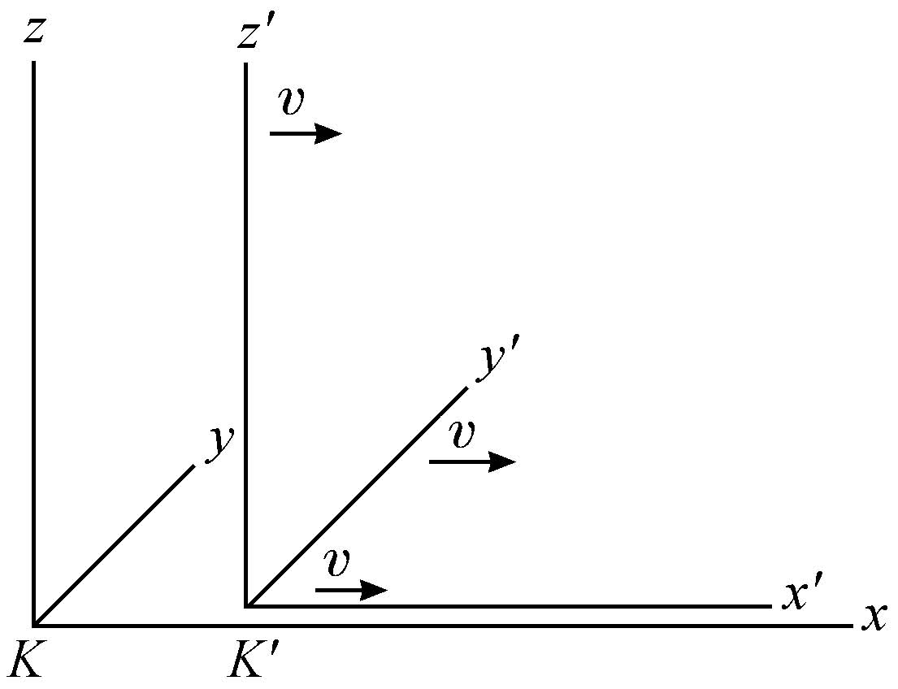
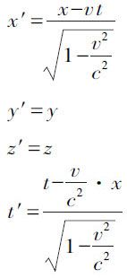
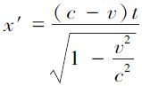
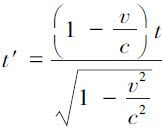

上面最后三节的结果表明，光的传播定律与相对性原理的表面抵触(第7节)是根据这样一种考虑推导出来的，这种考虑从经典力学借用了两个不确当的假设；这两个假设就是：
(1) 两事件的时间间隔(时间)与参考物体的运动状况无关。
(2) 一刚体上两点的空间间隔(距离)与参考物体的运动状况无关。
如果我们舍弃这两个假设，第7节中的两难局面就会消失，因为第6节所导出的速度相加定理就失效了。看来真空中光的传播定律与相对性原理是可以相容的，因此就产生这样的问题： 我们必须如何修改第6节的论述以便消除这两个基本经验结果之间的表面矛盾?这个问题导致了一个普遍性问题。在第6节的讨论中，我们既要相对于火车又要相对于路基来谈地点和时间。如果我们已知一事件相对于铁路路基的地点和时间，如何求出该事件相对于火车的地点和时间呢?对于这个问题能否想出能使真空中光的传播定律与相对性原理不相抵触的解答?换言之： 我们能否设想，在各个事件相对于一个参考物体的地点和时间与各该事件相对于另一个参考物体的地点和时间之间存在着这样一种关系，使得每一条光线无论相对于路基还是相对于火车，它的传播速度都是c 呢?这个问题获得了一个十分明确的肯定解答，并且导致了用来把一个事件的空-时量值从一个参考物体变换到另一个参考物体的一个十分明确的变换定律。
在我们讨论这一点之前，我们将先提出需要附带考虑的下列问题。到目前为止，我们仅考虑了沿着路基发生的事件，这个路基在数学上必须假定它起一条直线的作用。如第2节所述，我们可以设想这个参考物体在横向和竖向各予补充一个用杆构成的框架，以便参照这个框架确定任何一处发生的事件的空间位置。同样，我们可以设想火车以速度v 继续不断地横亘整个空间行驶着，这样，无论一事件有多远，我们也都能参照另一个框架来确定其空间位置。我们尽可不必考虑这两套框架实际上会不会因固体的不可入性而不断地相互干扰的问题；这样做不至于造成任何根本性的错误。我们可以设想，在每一个这样的框架中，画出三个互相垂直的面，称之为“坐标平面”(在整体上这些坐标平面共同构成一个“坐标系”)。于是，坐标系K 对应于路基，坐标系K′ 对应于火车。一事件无论在何处发生，它在空间中相对于K的位置可以由坐标平面上的三条垂线x,y,z 来确定，时间则由一时间量值t 来确定。相对于K′ ，此同一事件的空间位置和时间将由相应的量值x′,y′,z′,t′ 来确定，这些量值与x,y,z,t 当然并不是全等的。关于如何将这些量值看作为物理测量的结果，上面已作了详细的叙述。

图2
显然我们面临的问题可以精确地表述如下。若一事件相于K的x,y,z,t 诸量值已经给定，问同一事件相对于K′ 的x′,y′,z′,t′ 诸量值为何?在选定关系式时，无论是相对于K 或是相对于K′ ，对于同一条光线而言(当然对于每一条光线都必须如此)真空中光的传播定律必须被满足。若这两个坐标系在空间中的相对取向如图2所示，这个问题就可以由下列方程组解出：

这个方程组称为“洛伦兹变换” [1] 。
如果我们不根据光的传播定律，而根据旧力学中所隐含的时间和长度具有绝对性的假定，那么我们所得到的就不会是上述方程组，而是如下的方程组：
x′=x-vt
y′=y
z′=z
t′=t
这个方程组通常称为“伽利略变换”。在洛伦兹变换方程中，我们如以无穷大值代换光速c ，就可以得到伽利略变换方程。
通过下述例示，我们可以很容易地看到，按照洛伦兹变换，无论对于参考物体K 还是对于参考物体K′ ，真空中光的传播定律都是被满足的，例如沿着正x 轴发出一个光信号，这个光刺激按照下列方程前进
x=ct
亦即以速度c 前进。按照洛伦兹变换方程，x 和t 之间有了这个简单的关系，则在x′ 和t′ 之间当然也存在着一个相应的关系。事实也正是如此： 把x 的值ct 代入洛伦兹变换的第一个和第四个方程中，我们就得到：


这两方程相除，即直接得出下式：
x′=c t′
亦即参照坐标系K′ ，光的传播应当按照此方程式进行。由此我们看到，光相对于参考物体K′ 的传播速度同样也是等于c 。对于沿着任何其他方向传播的光线我们也得到同样的结果。当然，这一点是不足为奇的，因为洛伦兹变换方程就是依据这个观点推导出来的。
[1] 洛伦兹变换的简单推导见附录Ⅰ(1)。